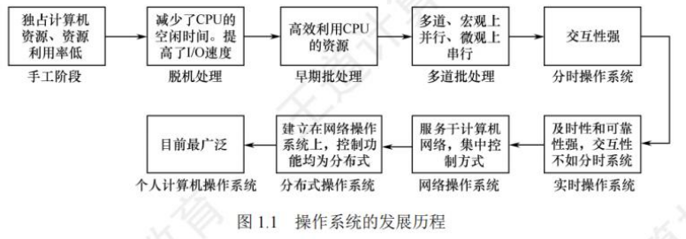

操作系统基础
[toc]
概念
操作系统是控制和管理整个计算机系统的硬件和软件资源，合理地组织、调度计算机的工作和资源的分配，进而为用户和其他软件提供方便接口和环境的程序集合。
操作系统是计算机系统中最基本的系统软件。
特征
并发和共享是最基本的特征，两者之间互为存在的条件。
-
并发：两个或多个事件在同一时间间隔内发生。
- 并行性是指系统具有同时进行运算或操作的特性。同一时刻能完成两种或两种以上的工作。
-
共享：系统中的资源可供内存中多个并发执行的进程共同使用。资源共享可分为互斥共享和同时访问。
- 互斥共享：一段时间内只允许一个进程访问该资源，该资源称为临界资源。
- 同时访问：一段时间内由多个进程同时访问(分时)。例如：磁盘。
-
虚拟：将一个物理上的实体变为若干逻辑上的对应物。
虚拟技术可归纳为：时分复用技术，空分复用技术。 -
异步：由于资源有限，进程的执行不是一贯到底的，而是走走停停的，以不可预知的速度向前推进。
运行环境相同，操作系统就须保证多次运行进程后都能获得相同的结果。
目标和功能
操作系统应具有以下几方面的功能：处理机管理、存储器管理、设备管理和文件管理。为了方便用户使用操作系统，还必须向用户提供接口。同时，操作系统可用来扩充机器，以提供更方便的服务、更高的资源利用率。
作为计算机系统资源的管理者
- 处理机管理(进程管理)：进程控制、进程同步、进程通信、死锁处理、处理机调度等。
- 存储器管理：内存分配与回收、地址映射、内存保护与共享和内存扩充等。
- 文件管理：文件存储空间的管理、目录管理及文件读写管理和保护等。
- 设备管理：缓冲管理、设备分配、设备处理和虚拟设备等。
作为用户和计算机硬件之间的接口
- 命令接口：用户利用这些操作命令来组织和控制作业的执行。
- 联机命令接口(交互式命令接口)：适用于分时或实时系统的接口。
- 脱机命令接口(批处理命令接口)：适用于批处理系统。
- 程序接口：编程人员可以使用它们来请求操作系统服务。由一组系统调用组成。
实现了对计算机资源的扩充
发展历程

手工操作阶段(无OS)
用户在计算机上算题的所有工作都要人工干预，如程序的装入、运行、结果的输出等。
- 手工操作阶段有两个缺点：
- 用户独占全机，虽然不会出现因资源已被其他用户占用而等待的现象，但资源利用率低。
- CPU等待手工操作， CPU的利用不充分。
唯一的解决办法：用高速的机器代替相对较慢的手工操作来对作业进行控制。
批处理阶段(OS开始出现)
按发展历程又分为单道批处理系统、多道批处理系统。
单道批处理
为实现对作业的连续处理，需要先将一批作业以脱机方式输入磁带，并在系统中配上监督程序(Monitor)，在其控制下，使这批作业能一个接一个地连续处理。虽然系统对作业的处理是成批进行的，但内存中始终保持一道作业。
-
主要特征
- 自动性。在顺利的情况下，磁带上的一批作业能自动地逐个运行，而无须人工干预。
- 顺序性。磁带上的各道作业顺序地进入内存，先调入内存的作业先完成。
- 单道性。内存中仅有一道程序运行，即监督程序每次从磁带上只调入一道程序进入内存运行，当该程序完成或发生异常情况时，才换入其后继程序进入内存运行。
-
问题
- 每次主机内存中仅存放一道作业，每当它在运行期间(注意这里是“运行时”而不是“完成后”)发出输入/输出请求后，高速的 CPU 便处于等待低速的I/O完成的状态。为了进一步提高资源的利用率和系统的吞吐量，引入了多道程序技术。
多道批处理
用户所提交的作业都先存放在外存上并排成一个队列，作业调度程序按一定的算法从后备队列中选择若干作业调入内存，它们在管理程序的控制下相互穿插地运行，共享系统中的各种硬/软件资源。
当某道程序因请求I/O操作而暂停运行时，CPU便立即转去运行另一道程序，这是通过中断机制实现的。它让系统的各个组成部分都尽量的“忙”，切换任务所花费的时间很少，因而可实现系统各部件之间的并行工作，使其在单位时间内的效率翻倍。
-
主要特征
- 多道。计算机内存中同时存放多道相互独立的程序。
- 宏观上并行。同时进入系统的多道程序都处于运行过程中，但都未运行完毕。
- 微观上串行。内存中的多道程序轮流占有 CPU，交替执行。
-
问题
- 如何分配处理器。
- 多道程序的内存分配问题。
- I/O 设备如何分配。
- 如何组织和存放大量的程序和数据，以方便用户使用并保证其安全性与一致性。
-
优点
- 资源利用率高，多道程序共享计算机资源，从而使各种资源得到充分利用；
- 系统吞吐量大，CPU 和其他资源保持“忙碌”状态。
-
缺点
- 用户响应的时间较长；
- 不提供人机交互能力，用户既不能了解自己的程序的运行情况，又不能控制计算机。
分时操作系统
-
分时技术：指将处理器的运行时间分成很短的时间片，按时间片轮流将处理器分配给各联机作业使用。若某个作业在分配给它的时间片内不能完成其计算，则该作业暂时停止运行，将处理器让给其他作业使用，等待下一轮再继续运行。由于计算机速度很快，作业运行轮转得也很快，因此给每个用户的感觉就像是自己独占一台计算机。
-
分时操作系统：指多个用户通过终端同时共享一台主机，这些终端连接在主机上，用户可以同时与主机进行交互操作而互不干扰。
-
实现分时系统的关键问题：如何使用户能与自己的作业进行交互，即当用户在自己的终端上键入命令时，系统应能及时接收并及时处理该命令，再将结果返回用户。
-
分时系统与多道批处理系统的区别：多道批处理是实现作业自动控制而无须人工干预的系统，而分时系统是实现人机交互的系统
-
主要特征
- 同时性。同时性也称多路性，指允许多个终端用户同时使用一台计算机。
- 交互性。用户通过终端采用人机对话的方式直接控制程序运行，与同程序进行交互。
- 独立性。系统中多个用户可以彼此独立地进行操作，互不干扰，单个用户感觉不到别人也在使用这台计算机，好像只有自己单独使用这台计算机一样。
- 及时性。用户请求能在很短时间内获得响应。
实时操作系统
为了能在某个时间限制内完成某些紧急任务而不需要时间片排队，诞生了实时操作系统。在实时操作系统的控制下，计算机系统接收到外部信号后及时进行处理，并在严格的时限内处理完接收的事件。
-
时间限制可以分为两种情况：
- 若某个动作必须绝对地在规定的时刻(或规定的时间范围)发生，则称为硬实时系统，这类系统必须提供绝对保证，让某个特定的动作在规定的时间内完成。
- 若能够接受偶尔违反时间规定且不会引起任何永久性的损害，则称为软实时系统。
-
主要特点
-
及时性
-
可靠性
-
网络操作系统
网络操作系统将计算机网络中的各台计算机有机地结合起来，提供一种统一、经济而有效的使用各台计算机的方法，实现各台计算机之间数据的互相传送。
网络操作系统最主要的特点是：网络中各种资源的共享及各台计算机之间的通信。
分布式计算机系统
分布式计算机系统：用于管理分布式计算机系统的操作系统。
分布式计算机系统是由多台计算机组成并满足下列条件的系统：
- 系统中任意两台计算机通过通信方式交换信息；
- 系统中的每台计算机都具有同等的地位，即没有主机也没有从机；
- 每台计算机上的资源为所有用户共享；
- 系统中的任意台计算机都可以构成一个子系统，并且还能重构；
- 任何工作都可以分布在几台计算机上，由它们并行工作、协同完成。
分布式计算机系统主要特点是：分布性和并行性。
分布式操作系统与网络操作系统的本质不同：分布式操作系统中的若干计算机相互协同完成同一任务。
个人操作系统
个人计算机操作系统是目前使用最广泛的操作系统。